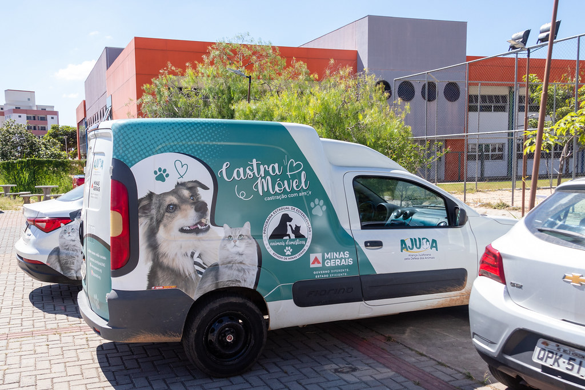
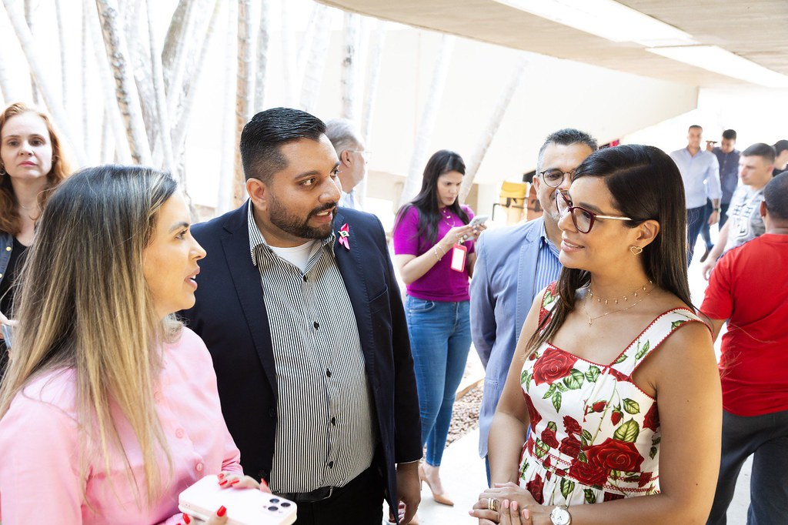

Detalhes dos Nossos Projetos
Nossos projetos são focados em diversas áreas para garantir o bem-estar dos animais que resgatamos. Abaixo estão alguns dos principais projetos que desenvolvemos:
- Campanhas de Vacinação: Realizamos campanhas regulares de vacinação para proteger os animais contra doenças comuns.
- Castração: Oferecemos serviços de castração para controlar a população de animais de rua e prevenir abandonos. 
- Programas de Adoção Responsável: Facilitamos a adoção de animais resgatados, garantindo que encontrem lares amorosos e responsáveis.

- Educação Comunitária: Promovemos a conscientização sobre cuidados com os animais e a importância da adoção através de workshops e eventos comunitários. 